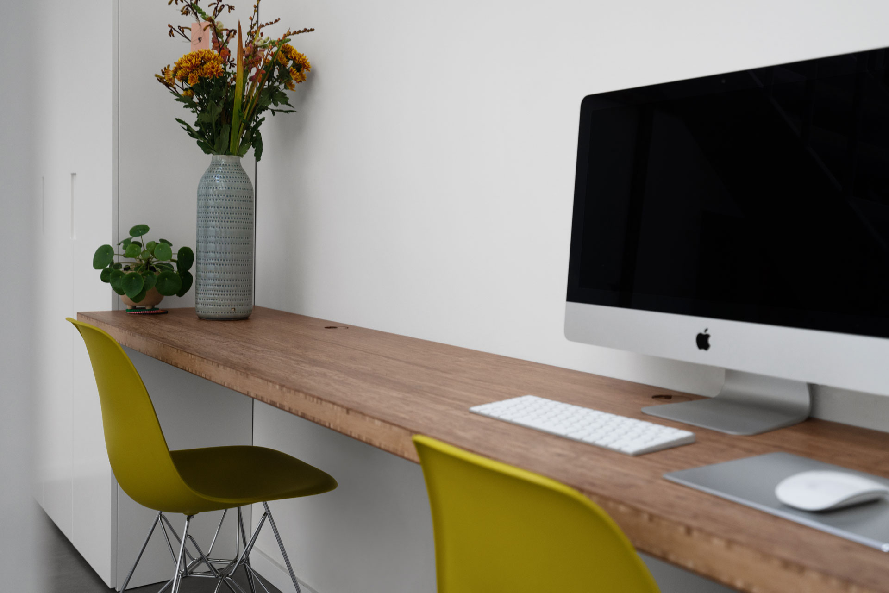

Functionele blikvanger
In een prachtige ruime woning kreeg ik de vraag over de inrichting van een ‘tussenruimte’. Deze architectonisch interessante ruimte met veel daglicht was in de praktijk een doorloop die makkelijk rommelig werd. Door het ontwerpproces stapsgewijs te doorlopen kwamen de smaken van de eigenaren samen en zijn hele goede keuzes gemaakt.
De werkplek en kast zijn op maat gemaakt door een meubelmaker en samen hebben we het juiste vloerkleed, verlichting en meubels weten te vinden. De tussenruimte is een prachtige plek geworden die door de hele familie (en huisdieren) optimaal gebruikt wordt.
Optimale gebruiksfunctie in een sfeervolle ruimte.
Het resultaat
Om in ons nieuwe huis naar de woonkamer op de bovenste verdieping te komen, kom je eerst door een ruimte met een glazen dak en een trap in het midden. Het gevaar bestond dat het een soort overloop of hal zou worden. Wij wilden dat het een volwaardig deel van het huis zou zijn waar de kinderen zich konden terugtrekken. Renate van Fierdesign heeft heel goed geluisterd naar onze wensen en kwam met heel mooie ideeën om deze ruimte in te richten. Zelf hadden we dit nooit zo kunnen bedenken. Nu is het een van de blikvangers van het huis geworden waar de hele familie graag zit.
Uit het ontwerpproces
Concept, moodboards, indelings- en lichtplannen: zo kwam het ontwerp stap voor stap tot stand.